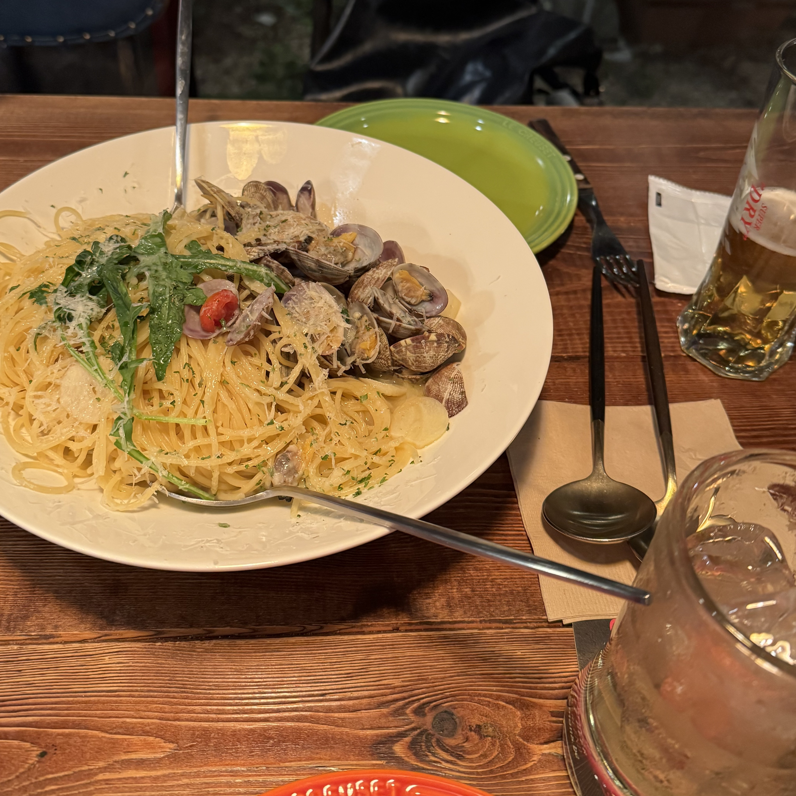
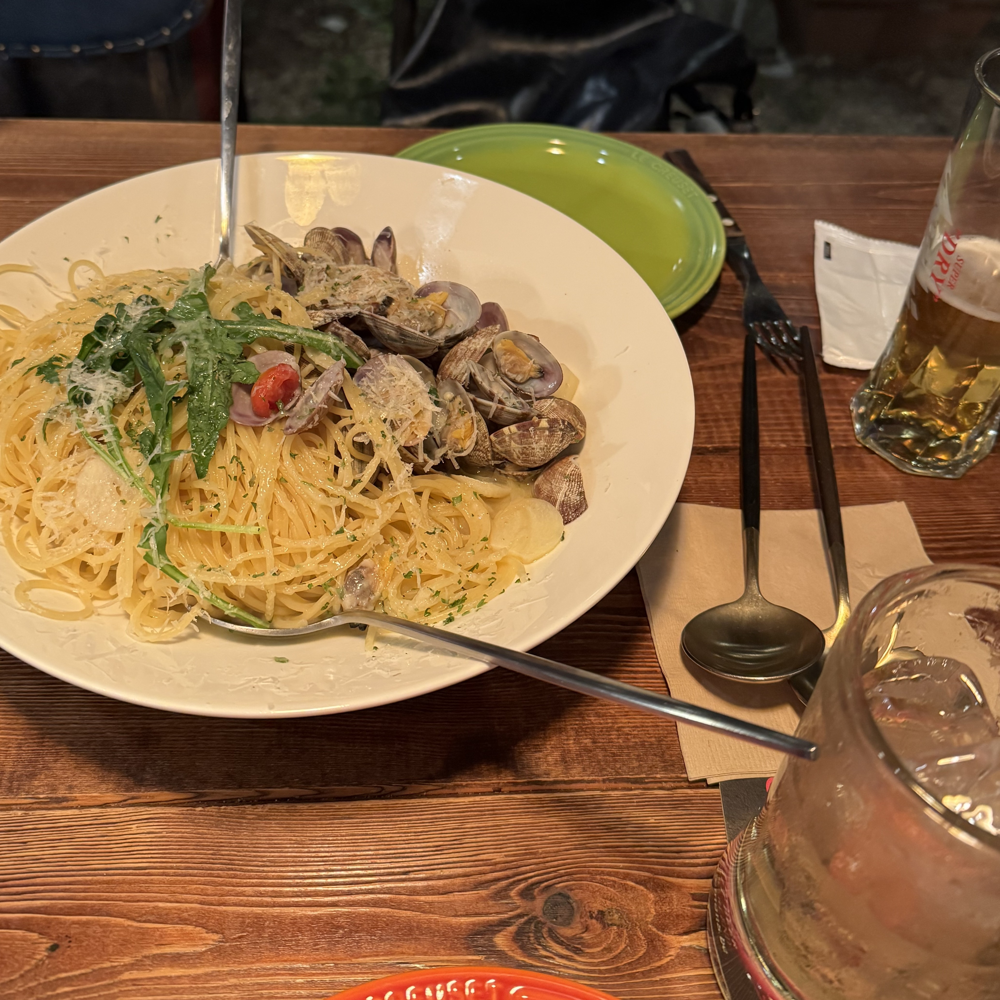
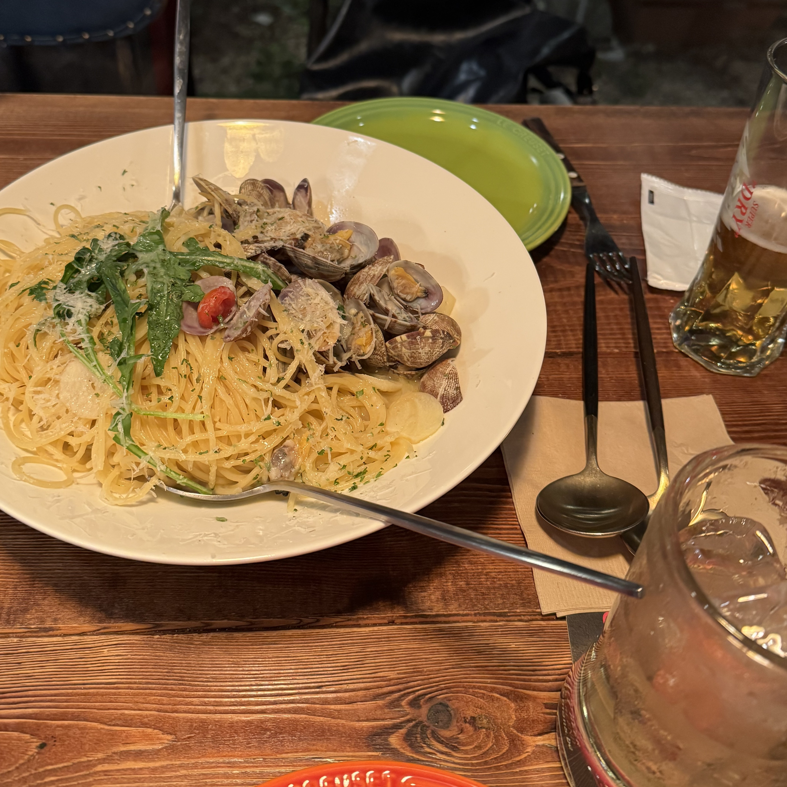
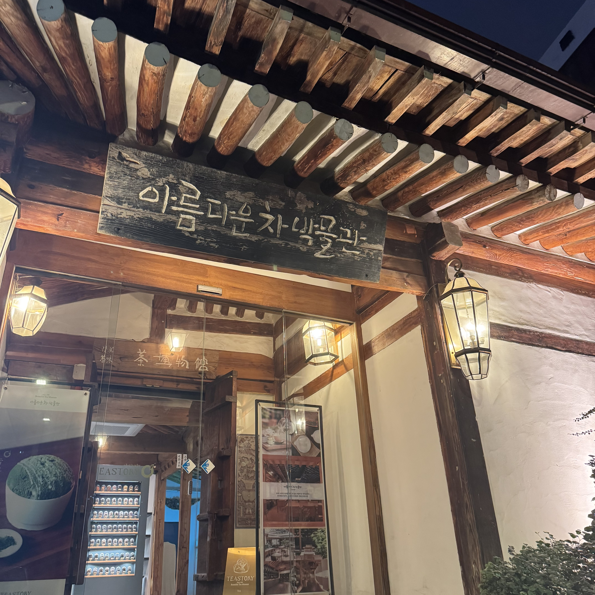
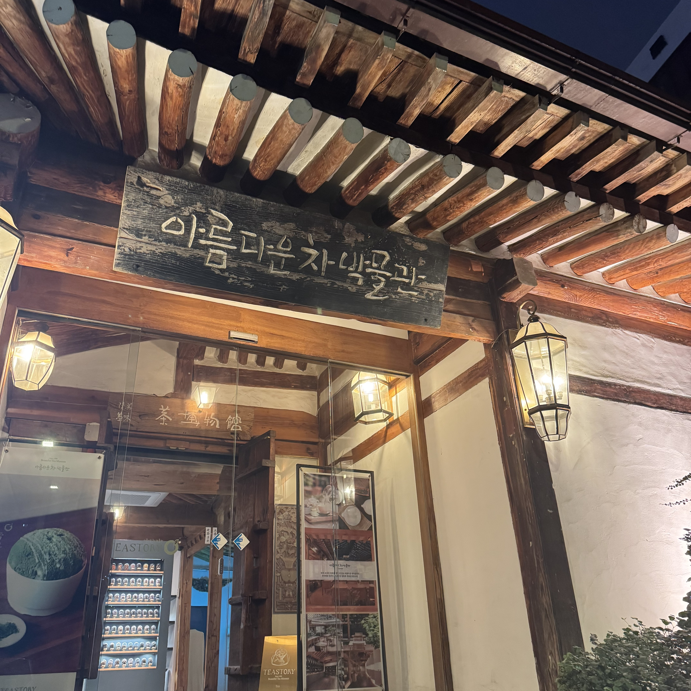

혜화역
 

서울에 있는 대학교에 합격했지만, 서로 캠퍼스가 멀어 자주 보지 못하던 친구를 오랜만에 만났다. 함께 걷다가 우연히 들어간 식당이 예상보다 맛있어서 깜짝 놀랐다.
김서연의 친구들과의 일상을 소개하는 블로그입니다.

서울에 있는 대학교에 합격했지만, 서로 캠퍼스가 멀어 자주 보지 못하던 친구를 오랜만에 만났다. 함께 걷다가 우연히 들어간 식당이 예상보다 맛있어서 깜짝 놀랐다.
 

이번 학기에 같은 교양 수업을 듣게 되었는데, 필드트립 과제가 생겨 함께 다녀왔다. 그곳에서 차를 마시며 다양한 도자기로 만든 다기를 둘러볼 수 있어 즐겁고 뜻깊은 시간이었다.
다른 과 친구와 함께 서울역 근처에서 열린 청년 작가 아트페어를 관람한 뒤, 근처의 유명한 카페를 찾아가 빵을 먹었다. 기대만큼 맛있지는 않았지만, 즐겁고 의미 있는 하루였다.
룸메이트와는 매일 보지만, 이렇게 함께 밖에 나가 놀러간 것은 처음인 것 같다. 인스타그램에서 유명한 카페를 찾아가 사진도 많이 찍고 즐긴 뒤, 망원 한강공원에서 노을을 바라보며 마음의 안정을 느꼈다.